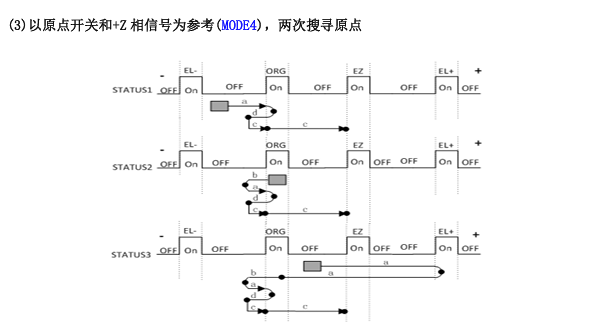

定位精度编码器级（Z 相）
重复性高（同圈 Z 相）
主要风险ORG/Z 重合、减速器
核心约束只认 ORG 后第一个 Z 相
1. 核心流程
① 粗定位：电机快速进入 ORG（原点开关），确认大致位置。② 精定位：退出 ORG，低速重入，捕获 ORG 后第一个 Z 相脉冲即停并锁定为原点。③ 方向固定：始终同方向进入 ORG，保证 Z 相属于同一圈。
2. 回零方式示意

图 1：回零方式示意（ORG 原点开关粗定位 + Z 相脉冲精定位，低速二次进入锁定同圈 Z 相）。
3. 风险项
| 风险 | 机理 / 场景 | 等级 |
|---|---|---|
| ORG 与 Z 相重合 | 进入 ORG 时可能直接触发 Z 相，容差极小 | 高 |
| 减速器效应 | 减速比越大，输出轴对应 Z 相角度范围越小，容差进一步缩小 | 高 |
| 信号抖动 / 延迟 | 光电开关或编码器边缘抖动，可能导致误判 | 中 |
| 退出不足 | 二次退出 ORG 距离不够，重入时仍处同一 Z 相边缘 | 中 |
| 软件逻辑不严谨 | 未明确"只认 ORG 后第一个 Z 相"，可能重复识别 | 中 |
4. 工程对策
| 对策 | 实施要点 | 针对风险 |
|---|---|---|
| 机械错位设计 | ORG 与 Z 相避免重合，错开一定角度 | ORG/Z 重合 |
| 低速进入 | 二次回零保持低速，避免惯性跨圈 | 减速器效应、跨圈 |
| 信号滤波 | 对 ORG 和 Z 相信号做去抖动处理 | 信号抖动 / 延迟 |
| 软件约束 | 逻辑明确"只认 ORG 后第一个 Z 相"，忽略进入瞬间重合脉冲 | 软件逻辑、退出不足 |
| 一致性测试 | 多次复位检查原点坐标，重复精度在编码器分辨率范围内 | 整体重复性 |
5. 结论
总结：二次回零 + Z 相位优势是定位精度高、重复性好，低速策略避免惯性跨圈；但减速器和机械安装使容差窗口缩小，必须通过机械错位 + 软件逻辑 + 信号滤波保证每次都停在同一圈的 Z 相。